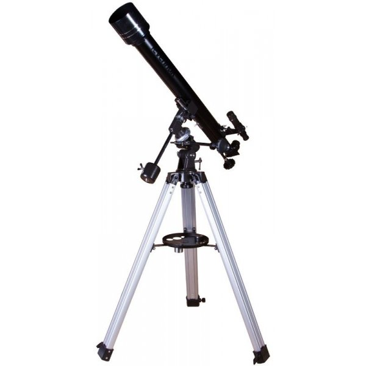
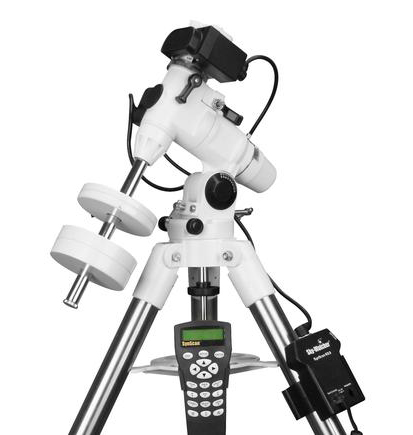

Какие бывают телескопы
Оптический телескоп — телескоп, собирающий и фокусирующий электромагнитное излучение оптического диапазона. Его основные задачи увеличить блеск и видимый угловой размер[1] объекта, то есть, увеличить количество света, приходящего от небесного тела (оптическое проницание) и дать возможность изучить мелкие детали наблюдаемого объекта (разрешающая способность).
Вкратце. Есть три типа телескопов: линзовый, зеркальный и зеркально-линзовый. Линзовый для начинающих. Зеркальный и зеркально-линзовый для опытных. Телескоп стоит на штативе и монтировке. Через монтировку идет управление и она бывает: экваториальная и азимутальная. Экваториальная профессиональная, а азимутальная простая.
От типа зависит: вес и размер телескопа, его стоимость и какие объекты сможете рассмотреть. Большой размер не гарантирует лучшее качество картинки. Телескопы бывают: Линзовые — длинные и вытянутые. Зеркальные — короче линзовых, но шире. Зеркально-линзовая — совсем маленькие, но мощные. От погоды и оптики зависит количество объектов, которые вы сможете увидеть. В любом телескоп можно рассмотреть звезды, важно, какого качества оптика стоит внутри.
Линзовые телескопы (рефракторы) длинны и тонкие, линзы находятся в верхней части трубы. С хорошей оптикой дают резкое и контрастное изображение. Конструкция крепкая, труба герметична и пыль не попадет внутрь. Диаметр объектива от 60 до 130 мм, можно рассмотреть ближайшие планеты и Луну, но нельзя туманности и галактики. Телескоп показывает зеркальное отражение, поэтому к поиску объектов по звездным картам надо привыкнуть. Для новичков и любителей.
Зеркальные телескопы (рефлекторы) с вогнутым зеркалом в нижней части трубы и окуляром сбоку.
Будете видеть перевернутое изображение, но смотреть на звезды это не мешает.
Труба открыта и при наблюдении появляется пыль, поэтому требует больше ухода, чем линзовый телескоп.
Периодически нужно настраивать оптическую систему.
Для новичков, любителей и опытных.
Зеркально-линзовые телескопы (комбинированные) компактные и дают самое качественное изображение, хотя по яркости и контрастности уступают линзовым.
Популярны системы Максутова- и Шмидта-Кассегрена. В телескопы Максутова хорошо наблюдать за луной и планетами, а в Шмидта-Кассегрена делать астрофотографии.
Для любителей и опытных. Поставляется с автонаведением.
Монтировки и треноги
Тренога — опора телескопа. Монтировка — находится между треногой и телескопом, она бывает двух типов — экваториальная и азимутальная. А штатив — конструкция из треноги и монтировки.
Экваториальная монтировка требует настройки: установить широту наблюдения и сориентировать по сторонам горизонта (по компасу или полярной звезде). Это помогает следить за перемещением объектов, которые меняют свое положение из-за вращения земли. Можно купить часовой механизм, тогда телескоп сам будет следить за объектами.
Азимутальная монтировка универсальная и простая, не требует установки и настройки. Чтобы вести телескоп за объектом, нужно крутить одновременно две ручки, влево-вправо вверх-вниз, поэтому при наблюдении на большом увеличении легко сбиться и потерять объект. В телескоп можно наблюдать за наземными объектами.
Монтировка с автоматическим наведением сама ищет и следит за звездами с помощью встроенных моторов. Управление через компьютер, а поиск звезд с помощью базы астрономических объектов: выбираете объект, телескоп находит и следит за ним.
